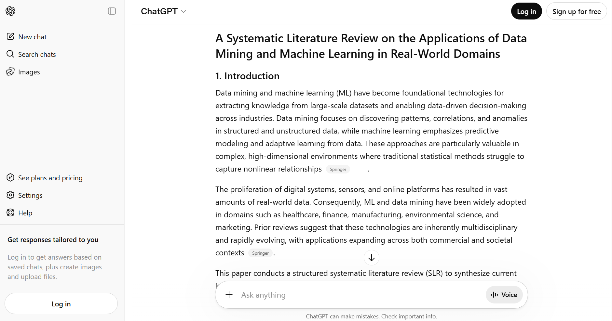
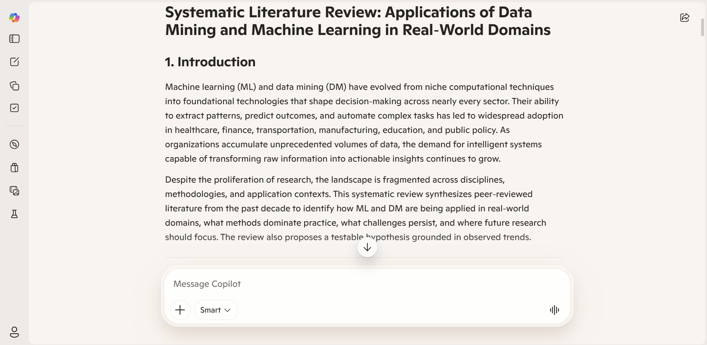
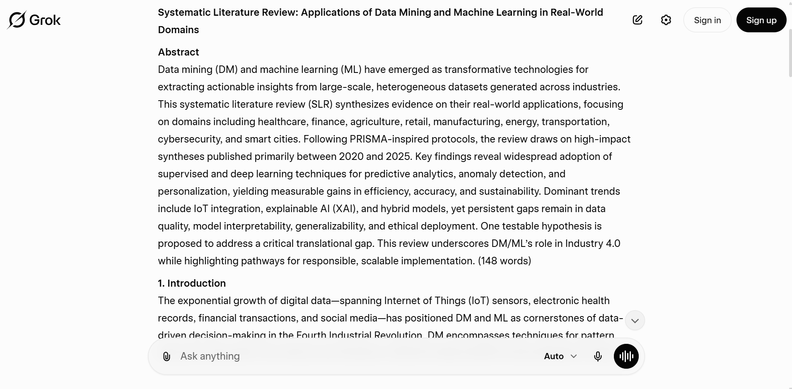

Assignment2
Step 1. Initial Prompt Creation
Initial Prompt Creation
Prompt used: Conduct a 2,000-word structured systematic literature review on the applications of data mining and machine learning in real-world domains. Include a methodology section, synthesize key findings, identify trends and gaps, and propose one testable hypothesis. Use an academic tone and emulate systematic review standards.
Step 2. Analysis of Model Responses
I compared the outputs from ChatGPT, Copilot, and Grok based on structure, synthesis, trends and gaps, hypothesis, and references.
ChatGPT Output

ChatGPT gave a clear and organized answer. It included all main sections such as introduction, methodology, findings, trends, gaps, and conclusion. The structure was good, but the methodology part was not very detailed. The explanation of applications (like healthcare and finance) was easy to understand. It also mentioned important trends such as deep learning and explainable AI. It identified some gaps like lack of validation and data privacy issues. The hypothesis was simple and testable, focusing on explainability and how it affects adoption. However, the references were not very strong. It mentioned sources like “Springer” or “arXiv” without giving full citations. Overall, ChatGPT was clear and easy to read, but not very detailed.
Copilot Output

Copilot had very good structure. The methodology section was clearly written and included details like search strategy and selection criteria. The review covered many domains and explained them well. It clearly showed applications, benefits, and challenges in each area. It also discussed trends such as explainable AI, federated learning, and human-AI collaboration. The research gaps were explained clearly. The hypothesis was clear and relevant. Compared to ChatGPT, Copilot was better organized and more complete. However, it was still not very deep in analysis.
Grok Ouput

Grok gave the most detailed answer. The structure was strong and followed systematic review style. The findings were very detailed and included numbers and performance results, which made it more realistic. It also explained trends like IoT, hybrid models, and sustainability in more depth. The discussion of gaps was stronger and more critical than the other models. It talked about issues like data quality, ethics, and generalization. The hypothesis was very strong and specific. It included clear measurements and a real testing setup. However, the answer was more complex and harder to read compared to the others.
Step 3. Refine the Prompt
Based on the weaknesses observed in each model, I refined the prompts to improve structure, depth, and academic quality.
Refined Prompt for ChatGPT
Conduct a 2,000-word structured systematic literature review on the applications of data mining and machine learning in real-world domains such as healthcare, finance, and education. Clearly explain the methodology, including search strategy and selection criteria. Provide detailed synthesis of findings, identify key trends and research gaps, and include one clear and testable hypothesis. Use simple but academic language and provide proper academic-style references.
Refined Prompt for Copilot
Conduct a 2,000-word structured systematic literature review on data mining and machine learning applications. Follow a clear systematic review format with a detailed methodology section (search strategy, inclusion/exclusion criteria, and data extraction). Provide deeper critical analysis of findings across domains, clearly identify trends and research gaps, and propose one well-defined and testable hypothesis. Ensure the discussion is analytical, not just descriptive.
Refined Prompt for Grok
Conduct a 2,000-word structured systematic literature review on the applications of data mining and machine learning in real-world domains. Provide a clear and detailed methodology section following systematic review standards. Present key findings with strong analysis but use clear and simple language. Identify major trends and gaps, and propose one realistic and testable hypothesis. Avoid overly complex language and improve readability while maintaining academic quality.
After refining the prompts, the outputs from all three models improved.
ChatGPT
ChatGPT showed clear improvement. The methodology section became more detailed, including search strategy and selection criteria. The explanation of applications was more focused on specific domains like healthcare, finance, and education. The references were also more complete compared to the first response.
Copilot
Copilot remained strong in structure and organization. After refinement, it included more critical discussion and better explanation of methods and findings. The use of examples and references was also clearer. The output became more balanced between description and analysis.
Grok
Grok improved in readability. The refined prompt helped make the language simpler and easier to understand. At the same time, it kept strong analysis and detailed explanations. The methodology and hypothesis remained strong, but the text became more accessible.
Overall, refining the prompts improved all models. ChatGPT became more detailed, Copilot became more analytical, and Grok became easier to read. This shows that prompt design has a strong effect on the quality of AI outputs.
Step 4. Cross-Model Collaboration
Final Synthesis Prompt
Using the outputs generated by ChatGPT, Copilot, and Grok (provided above), produce a 2,000-word structured systematic literature review on the applications of data mining and machine learning in real-world domains such as healthcare, finance, and education.
The review should combine the strongest elements from each model, including a clear and detailed methodology section, well-organized discussion of findings, identification of important trends and research gaps, and one realistic and testable hypothesis. The final output should be cohesive, academically sound, and written in clear and simple language.
Final Systematic Literature Review
Introduction
Data mining and machine learning have become important tools for analyzing large amounts of data and supporting decision-making in many real-world areas. Data mining focuses on finding patterns and useful information in data, while machine learning builds models that can learn from data and make predictions. Together, they help organizations improve efficiency and make better decisions.
With the rapid growth of digital data from healthcare systems, financial markets, and educational platforms, the use of these methods has increased significantly. Organizations now rely on machine learning to handle complex data and produce useful insights. This review examines how these techniques are used in healthcare, finance, and education. It also discusses key trends, identifies research gaps, and proposes a testable hypothesis.
Methodology
This study follows a structured systematic literature review approach inspired by PRISMA guidelines. The goal is to identify, select, and analyze relevant academic studies in a clear and organized way.
The literature search was conducted using major academic databases such as Google Scholar, Scopus, IEEE Xplore, and PubMed. The search included keywords such as data mining, machine learning, applications, healthcare, finance, and education. The focus was on studies published between 2010 and 2025 to include both earlier and recent research.
Studies were included if they focused on real-world applications, were published in peer-reviewed journals or conferences, and provided empirical results. Studies were excluded if they were purely theoretical, used only simulated data, or lacked sufficient methodological detail.
After screening the studies based on title, abstract, and full text, relevant information was collected. This included the application domain, methods used, type of data, and main findings. The results were then summarized and compared across domains.
Applications in Real-World Domains
In healthcare, machine learning is widely used to support diagnosis, predict diseases, and improve treatment decisions. Models such as decision trees, random forests, and deep learning are commonly applied to medical data. These models help doctors detect diseases earlier and provide more personalized treatment. However, challenges such as data privacy, bias in data, and lack of interpretability remain important concerns.
In finance, machine learning is used to detect fraud, assess credit risk, and support investment decisions. Financial institutions use these models to analyze transaction data and identify unusual patterns. This helps reduce financial losses and improve risk management. However, issues such as regulatory requirements and the need for transparent models make implementation more complex.
In education, data mining and machine learning are used to analyze student data and improve learning outcomes. These methods help predict student performance, identify students at risk, and provide personalized learning experiences. Although these applications are useful, challenges such as limited data availability and privacy concerns still exist.
Synthesis of Key Findings
Across all domains, machine learning improves prediction accuracy and supports data-driven decision-making. Many studies show that these methods perform better than traditional statistical approaches, especially when working with large and complex datasets.
Most applications rely on supervised learning methods, while deep learning is becoming more common in areas such as medical imaging and financial prediction. Overall, the use of machine learning continues to grow across different fields.
Trends
Several important trends can be observed in the literature. One major trend is the increasing use of deep learning techniques, which are especially useful for handling complex data. Another trend is the growing importance of big data, which provides more information for training models.
There is also a shift toward real-time analysis, where decisions are made quickly based on current data. In addition, explainable artificial intelligence is becoming more important, especially in healthcare and finance, where understanding model decisions is necessary.
Research Gaps
Despite the progress, several research gaps remain. Many studies do not test their models on new datasets, which limits their reliability. There is also a lack of interpretability in many models, making it difficult for users to trust them.
Data quality is another major issue, as missing or biased data can affect results. Ethical concerns, such as privacy and fairness, are also important. Finally, many studies do not focus on real-world implementation, which limits their practical value.
Proposed Hypothesis
A possible hypothesis based on this review is that machine learning models with explainability features will have higher adoption rates than black-box models with similar accuracy in healthcare and finance.
This hypothesis can be tested by comparing user trust and usage of explainable and non-explainable models in real-world settings.
Conclusion
Data mining and machine learning are transforming healthcare, finance, and education by improving predictions and supporting decision-making. These technologies provide many benefits, but challenges such as data quality, interpretability, and ethical concerns must be addressed.
Future research should focus on developing models that are not only accurate but also transparent and reliable. By addressing these challenges, machine learning can provide even greater benefits in real-world applications.
Justification of synthesis
To create the final review, I combined the strengths of all three models.
ChatGPT provided clear and simple explanations, which made the text easy to understand.
Copilot contributed strong structure and a well-developed methodology section, which improved the academic quality of the review.
Grok provided deeper analysis and a stronger hypothesis, which made the review more detailed.
By combining these strengths, the final review is more balanced, clear, and academically stronger than using only one model.
Step 5. Reflection
How did each model approach the systematic review differently?
Each model approached the systematic review in a slightly different way. ChatGPT focused on providing clear and simple explanations, which made the content easy to understand. However, it was sometimes less detailed.
Copilot focused on strong structure and organization. It clearly followed the format of a systematic review and included a detailed methodology section. This made the output more academic and well-organized.
Grok provided the most detailed and analytical response. It included deeper discussion of findings, trends, and gaps, and proposed a more specific and realistic hypothesis. However, its explanations were sometimes more complex.
Which prompt refinements yielded the best results for each model?
The refined prompts improved the outputs for all models. For ChatGPT, adding instructions for a clearer methodology and better references made the response more complete.
For Copilot, asking for deeper analysis helped improve the discussion and made it less descriptive and more critical.
For Grok, simplifying the language in the prompt made the output easier to read while still keeping strong analysis.
Overall, refining the prompts helped each model perform better based on its weaknesses.
What did you learn about leveraging AI for structured academic reviews?
This exercise showed that the quality of AI output depends strongly on the prompt. A simple prompt gives a general answer, but a well-designed prompt produces a more structured and detailed response.
I also learned that different AI models have different strengths. Some are better at structure, others at explanation, and others at deeper analysis.
By comparing models and refining prompts, it is possible to combine their strengths and produce a better final result. This shows that AI can be a useful tool for academic work if it is used carefully and thoughtfully.